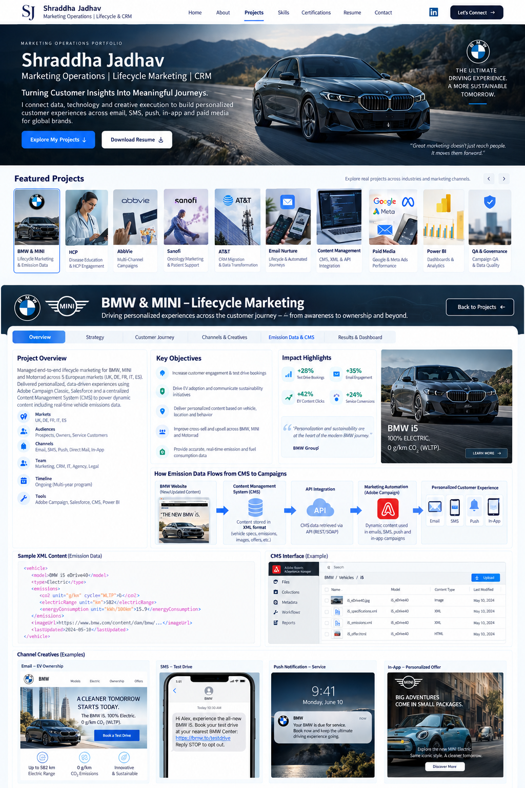
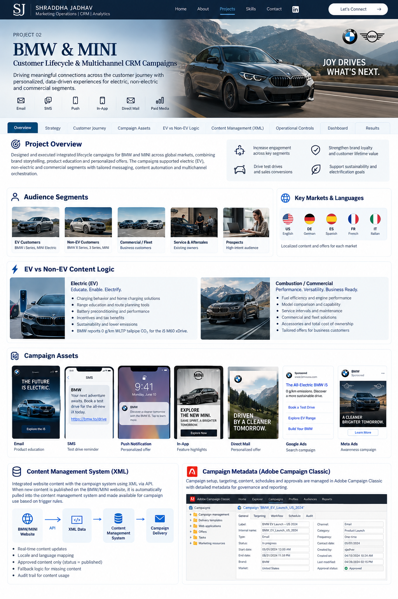

BMW iX xDrive45
32.9 t CO₂e lifecycle
European electricity mix in use phase. With renewable electricity in the use phase, the same BMW lifecycle disclosure shows 22.3 t CO₂e.
Orchestration of multilingual lifecycle campaigns across acquisition, test drive, ownership, service and loyalty, with governed product content, emissions data, CRM triggers and cross-channel measurement.
Increase test-drive intent, EV education, connected-service adoption, service engagement and loyalty while protecting localization, consent and brand governance.
Marketing owns journey strategy and prioritization; CRM operations owns data readiness, campaign build, QA, release governance and monitoring; content teams own approved product facts and assets.
Customer stage + market + language + vehicle affinity + powertrain + consent + behavioral signals determine the next best content and channel.
Success is measured across customer experience, execution quality, data integrity, launch timeliness, conversion and operational efficiency, not only clicks.
Email is often the primary narrative channel, while SMS, push, in-app and paid media reinforce intent-driven moments. JavaScript controls below let you switch the journey by lifecycle state.
These are rendered as native HTML/CSS HTML/CSS mockups rather than low-resolution screenshots, so the content stays sharp while demonstrating the personalization and operating logic behind each touchpoint.

Dynamic modules: {{firstName}}, {{modelAffinity}}, {{market}}, {{nearestDealer}}, {{chargingContent}}.
Your saved BMW i5 is ready for a charging & range guide tailored to your market.

Localized content can switch between electric, service, accessories or ownership modules based on customer state.
Emissions data is managed as structured product content rather than hard-coded campaign copy. A new or updated vehicle record is validated in the content layer, transformed to the campaign schema, and only then exposed to email, SMS, push, in-app or paid-media templates.
European electricity mix in use phase. With renewable electricity in the use phase, the same BMW lifecycle disclosure shows 22.3 t CO₂e.
Content logic can branch by powertrain so electric customers receive charging/energy messaging while combustion audiences receive efficiency and service content.
Vehicle emissions examples reference public BMW Group and MINI WLTP disclosures. Campaign rules shown below demonstrate how approved product data can be governed and activated across channels.
When a product fact changes on the website or upstream product source, an event triggers retrieval, transformation and validation. Marketing automation consumes only the approved output.
Separate content publishing from campaign deployment. Product teams can update a source fact while Marketing Operations controls when the campaign is allowed to consume it.
Market and language are explicit keys. Missing local content does not silently inherit global content unless the fallback policy allows it.
Each content object stores version, effective date, source URL, approval state and prior approved version for rollback.
Feed failures, schema mismatches, expired content and fallback usage create reason codes that can be monitored in operations reporting.
Defines whether the event and content are eligible to enter a live customer journey.
Protects the customer experience when a preferred content object or personalization value is unavailable.
Provides traceability across content, campaign, customer decisioning and release management.
Use the filters below to compare performance across markets and channels.